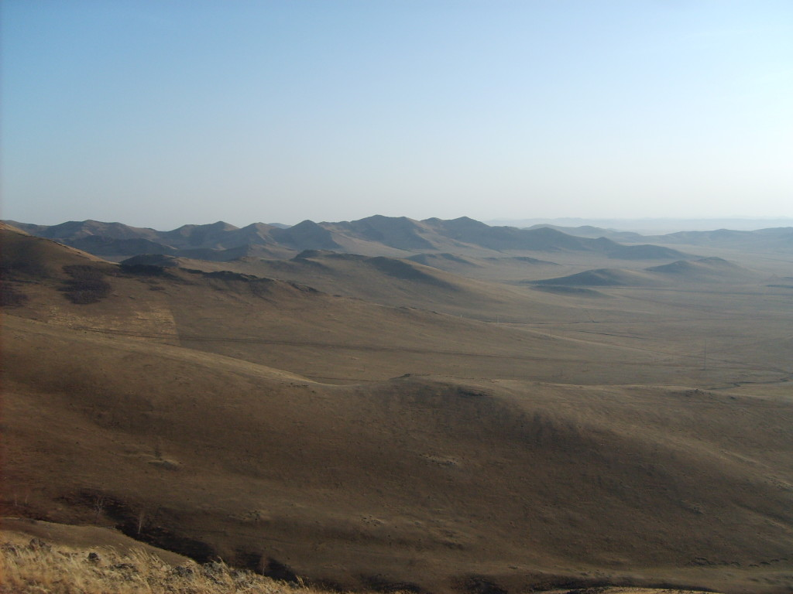

认出自己的财产
在共同放牧的草原上，简洁而鲜明的标记，帮助人们识别牲畜与物品的归属。
欧亚草原的视觉记忆
几笔线条，一个族群。
循着 Tamga，读懂游牧世界留下的身份与记忆。

土地无界，印记有归。
蒙古 · 欧亚草原 ↗THE TAMGA COLLECTION
从一个符号，走近一个族群。
本辑精选乌古斯部族的八枚印记。
试试其他部族名称，或清除筛选。
图录说明 所展示图样为现代数字绘制版本；同一部族的 tamga 在不同文献中可能存在变体。
BEYOND THE SYMBOL
Tamga 广泛见于欧亚草原文化。它可以是牲畜上的烙印、器物上的记号，也可以是族群与家族的身份象征。
阅读 Encyclopaedia Iranica 原文 ↗在共同放牧的草原上，简洁而鲜明的标记，帮助人们识别牲畜与物品的归属。
印记将个人与家族、部族联系起来。它的形态，也为研究草原社会的关系提供了线索。
随着人群流动，tamga 也出现在钱币、碑刻与印章上，在不同的环境中获得新的用途。
ABOUT THIS ARCHIVE
本图录以乌古斯部族为切入点，并非欧亚游牧文化的完整名录。族名中文为音译，分组参考乌古斯部族传统分类。符号详情附有图样来源，方便继续阅读与比较。